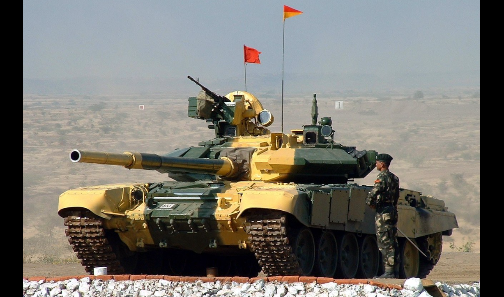
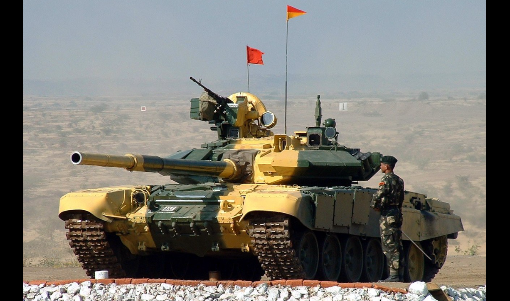
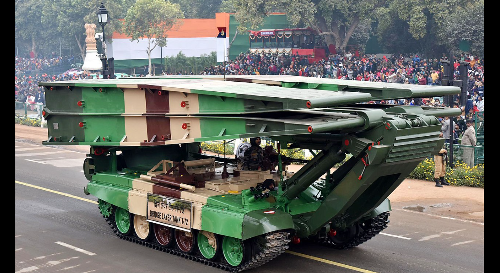
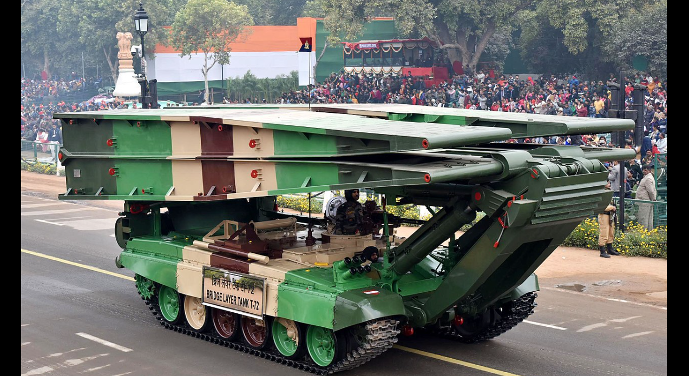
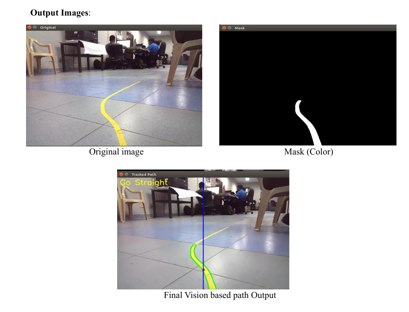
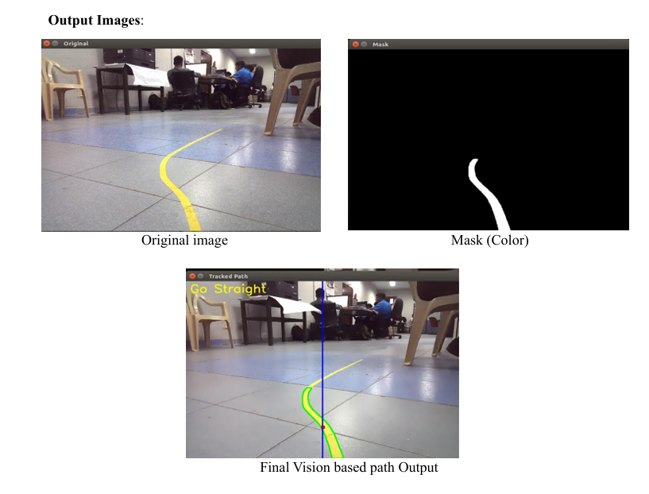

Experience

Internship at Heavy Vehicles Factory (HVF), Avadi
Step inside one of India’s most vital defense manufacturing units and explore how I applied my skills to a real-world autonomous systems project.
About the Organization
Heavy Vehicles Factory (HVF), Avadi, is a cornerstone of India's defense manufacturing sector. Established in 1961 and now operating under Armoured Vehicles Nigam Limited (AVNL), HVF is central to producing and maintaining India's fleet of armored combat vehicles.
Major Platforms Manufactured:
HVF is responsible for producing some of the most advanced armored vehicles in India’s defense arsenal:
- Arjun MBT: India's indigenous third-generation main battle tank.
- T-90 Bhishma: A license-built adaptation of the modern Russian T-90.
- T-72 Ajeya: Upgraded variants forming the backbone of India's armored corps.
- Combat Engineering Vehicles: Including Bridge Layer Tanks (BLTs) and Armoured Recovery Vehicles (ARVs).
 

 

The Project: Autonomous JetTank

The core of my internship was a technical project focused on the HiWonder JetTank, a ROS-based robotic platform powered by an NVIDIA Jetson Nano. The goal was to develop and implement key automation features for unmanned ground vehicles (UGVs).
We worked on a suite of algorithms for color tracking, vision-based obstacle avoidance, LiDAR mapping, and waypoint navigation, gaining insight into how sensor data can drive intelligent decision-making on embedded systems.
Developed Algorithms & Systems
1. Vision-Based Path Tracking
Enables the robot to follow a colored path using OpenCV for real-time image processing and a proportional controller for course correction.
 

2. Vision-Based Obstacle Avoidance
Uses Canny edge detection within specific zones of a camera's Region of Interest (ROI) to identify and navigate around obstacles.


3. Pre-defined Path Navigation via CSV
Allows the robot to follow a precise path defined by (x, y) coordinates from a CSV file, using a PID controller for accurate movement.

4. LiDAR-Based Guarding and Mapping
Implemented LiDAR for various behaviors, including maintaining distance from objects and generating real-time 2D environment maps in RViz.